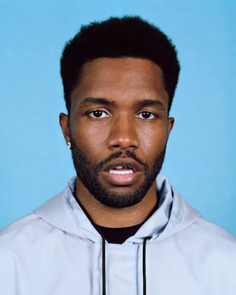

Biography

Real name: Christopher Edwin Breaux. Born on October 28, 1987 in Long Beach, California
Frank Ocean is an American singer, songwriter and rapper. He grew up in New Orleans. In 2005 Hurricane Katrina damaged the studio where he was recording, so he moved to Los Angeles. There he wrote songs for other artists, for example for Justin Bieber, John Legend and Brandy. Later he joined the hip-hop collective Odd Future led by Tyler, the Creator.
Career
In 2011 Frank released his first mixtape Nostalgia, Ultra for free on his Tumblr. His debut album Channel Orange came out in 2012 and won a Grammy for Best Urban Contemporary Album. In 2016, after four years of silence, he released two albums in two days: Endless and Blonde. Many critics called Blonde one of the best albums of the 2010s.
| Album | Year | Popular songs |
|---|---|---|
| Nostalgia, Ultra (mixtape) | 2011 | Novacane, Swim Good |
| Channel Orange | 2012 | Thinkin Bout You, Pyramids |
| Blonde | 2016 | Nikes, Ivy, Nights |
My favorite songs
- Pink + White
- Thinkin Bout You
- Nights
- Ivy
- Lost
Why I like him
- His songs are very honest and personal
- His music is calm and good for listening at night
- He doesn't follow trends and does what he wants
More information on Wikipedia.